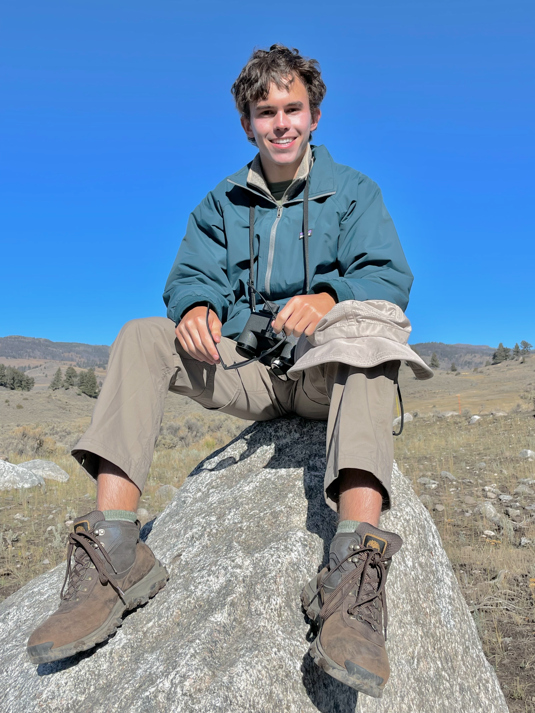
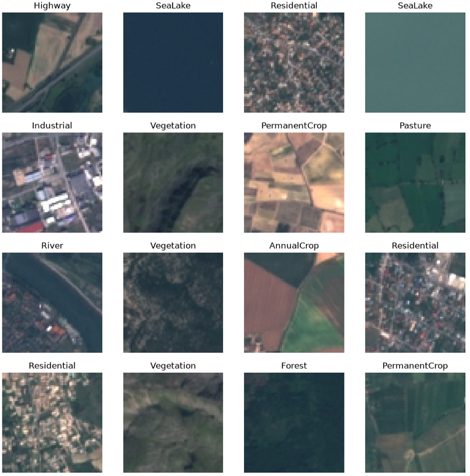
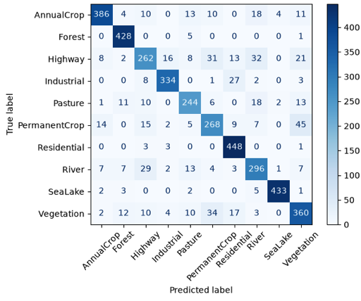

Georgia Tech electrical engineering student with hardware prototyping and applied machine learning experience. Proficient in pipeline development from diverse data streams. Eagle Scout with ample project management, public speaking, and leadership experience. Seeking an internship for Summer 2027 in hardware engineering and machine learning.
About Me
Technical
I'm an electrical engineering undergraduate at Georgia Tech pairing signal processing and AI with robotics and autonomous systems. I'm focused on gaining experience with embedded microcontrollers such as STM32 and implementing on-device AI. In the future, I'd like to learn more about FPGA programming. I hold an FCC Technician Class Ham Radio License. I have experience working with premier Python data science libraries, including Pandas, NumPy, Scikit-learn, and Tensorflow, and I've constructed full machine learning pipelines for various kinds of data streams, including high-dimensional tabular data and timeseries data. I'm also familiar with C, Java, and HTML/CSS. I'm seeking an internship for Summer 2027 in hardware engineering or machine learning.
Leadership
I'm an Eagle Scout and I have a breadth of experience in project management, team leadership, and public speaking. For my Eagle Scout service project, I benefited 50+ seniors with dementia and children with special needs by leading over a dozen volunteers in constructing 24 custom-made physical therapy lapboards and accompanying shelving units.
My completed Eagle Scout project.
I serve as the assistant Freshman social chair at my fraternity. I've coordinated 3 multi-organization events for a 30-person member class, managing logistics, preparation, and activity execution. I deliver engaging programming, including structured dance lessons and interactive performance competitions resulting in peak turnouts of 60+ participants. I enjoy public speaking, and I'm especially proud of my high school graduation speech where I spoke to an audience of over 3,000 attendees.
My graduation speech from May 2026.
One of my favorite things to do is mentor younger members of the organizations I'm part of. In high school, I spent dozens of days mentoring younger Scouts during camping, backpacking, and hiking trips. More recently, I've spent time tutoring students in geometry, chemistry, and physics.
Extracurricular

In my spare time, I love exploring new places, activities, and cuisines. I enjoy hiking, swimming, and playing pickleball. I also recently started swing dancing, so I'm always looking to learn a new move! One topic that fascinates me is music theory, and I'm hoping to get back into playing the piano soon.
Career
I'm still defining my long-term trajectory, but right now I'm most interested in the end-to-end data collection, processing, and analysis pipeline. While I'm eager to gain broad foundational experience across different domains and applications, I'm particularly fascinated by how these techniques intersect with fields like medical imaging and environmental monitoring. I'm especially excited about exploring novel on-device AI techniques to optimize data collection and edge processing.
Projects
Lithium-Ion Battery Remaining Useful Life (RUL) Telemetry Node and ML Predictor (in progress)
Real-time battery voltage and current data sampling using an STM32 Nucleo board paired with an end-to-end machine learning pipeline predicting lithium-ion aging parameters based on derived voltage and temperature features.
This project bridges low-level hardware and predictive machine learning to evaluate lithium-ion battery health in real time. I designed an end-to-end battery discharge telemetry system which captures live voltage and current data from lithium-ion cells via an STM32 microcontroller. The discharge characteristics captured by the telemetry node feed into a trained Random Forest regressor model built on the NASA Prognostics Center of Excellence lithium-ion battery aging dataset to predict the remaining useful life of a battery.
Telemetry Node (in progress)
Once complete, the STM32 telemetry node will stream live telemetry data to a computer measuring the voltage and current information of a real test cell. Validation of the model and telemetry node will be performed with multiple types of lithium-ion batteries at different points in their lifecycles.
ML Predictor (in progress)
The dataset, from NASA's Ames Research Center, contains strictly voltage, current, and temperature timeseries data for reference discharge cycles as the battery ages. Feature extraction must be performed on the raw voltage data to generate features relevant to battery aging, including ohmic internal resistance, dynamic voltage sag, short-duration energy discharged in watt-hours, and maximum temperature reached. Together, these measurements capture changes in electrical performance and thermal behavior as batteries age. The prediction target is the total watt-hours discharged over an entire drainage period, serving as a measure for the battery's remaining useful capacity and consequently, its remaining useful life.
After feature extraction, the data is standardized and used to train a Random Forest Regressor to estimate remaining useful life. Model performance is evaluated by comparing predictions against actual battery discharge measurements, including validation against a real battery drainage test. This provides an opportunity to assess how well a model trained on historical battery cycling data generalizes to real-world measurements.
Beyond predictive accuracy, the project uses SHAP (SHapley Additive exPlanations) analysis to investigate the relative importance of individual features and their contributions to model predictions. Particular attention is given to the relationship between early-discharge energy measurements and remaining battery capacity, as well as potential multicollinearity among the extracted features.
The ultimate goal is to determine how accurately a battery's remaining useful life can be estimated from just its initial discharge behavior, identify which measurements provide the most predictive information, and evaluate whether a smaller subset of features can achieve comparable accuracy without introducing unnecessary model complexity.
Satellite Land-Use Image Classification
End-to-end ML pipeline to classify 27,000 satillite imagery samples into distinct land-use categories using a convolutional neural network (CNN) with optimized with early stopping and transfer learning.
This project trains a convolutional neural network to classify satellite imagery into different land use categories. I started by visualizing each image.

Visualization of different land use types.
Then, I rescaled the pixel values of each image to fall between 0 and 1 to optimize model training. I designed the model with multiple sets of a 2D convolution, followed by a max pooling layer, followed by a batch normalization layer. The convolutional layer captures patterns in the data, the max pooling layer aggregates the data to reduce computational complexity, and the batch normalization layer accelerates training by standardizing inputs into the next layer.
I trained the model by itself, the model with early stopping to reduce overfitting, and a pretrained transfer learning CNN model paired with an artificial neural network (ANN) to tailor the model to the satellite data specifically. Confusion matrices proved immesely helpful in diagnosing bugs with the models.

Confusion matrix showing model performance.
Finally, I plotted the performance of the 3 models for each category against each other, and discovered that the CNN with early stopping performed the best with the least amount of computation required.
This copy of my resume does not contain personal information as it's posted publicly online. Please email me to receive a more tailored version with my personal information.